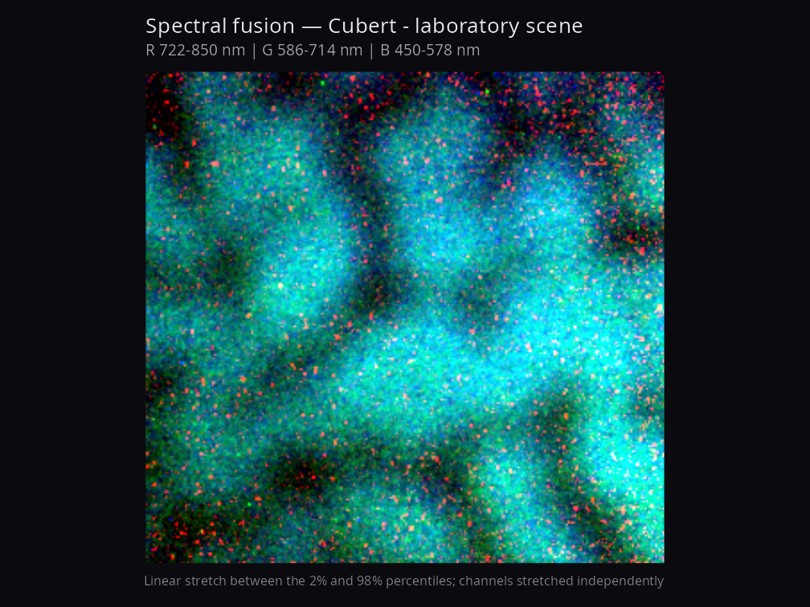
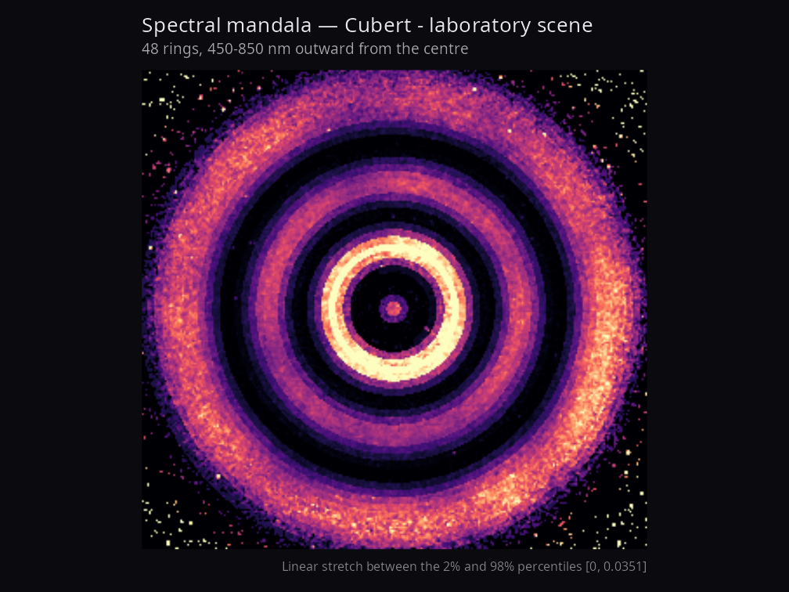
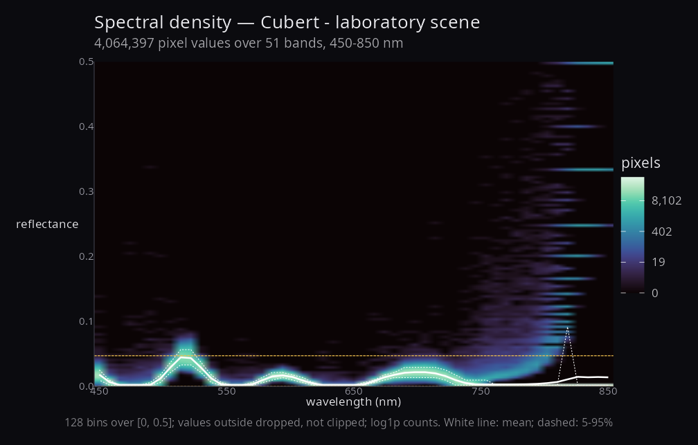

Publication-grade artistic visualisation of hyperspectral imagery.
Where hyperspectR renders cubes for inspection — quick looks, diagnostics, clinical index maps — hyperspectaculR renders them for display: figures meant to be looked at, in a paper or on a wall. It reads nothing and analyses nothing. It consumes the hsi_cube class and returns ggplot objects.
Design
Compositions that use the spectral axis. A false-colour picture of one band is not interesting; anything in this package should be impossible to produce from a single wavelength. A radial mandala sweeps the spectrum outward from a centre; a flux field measures how much a pixel’s reflectance moves across the spectrum; a fusion averages band groups rather than picking three wavelengths.
Every figure states its own enhancement. Contrast stretching is what makes hyperspectral data legible, and also what makes it easy to mislead. Every function captions the stretch it applied and the limits it used, so a striking figure remains a defensible one.
Perceptually uniform colour by default. hsa_palette() offers only ramps that are monotonic in lightness, so ordering survives greyscale printing and is legible to colourblind readers. Asking for turbo warns you.
Everything returns a ggplot. Figures compose with patchwork, re-theme, and export reproducibly. Nothing writes a file as a side effect.
Usage
library(hyperspectaculR)
cube <- hsa_demo_cube() # or any hyperspectR hsi_cube
hsa_mandala(cube) # radial spectral sweep
hsa_spectral_flux(cube) # cumulative change across the spectrum
hsa_fusion(cube) # multi-band colour compositeWith real data, via the reader packages:
library(hyperspectR)
cube <- hs_read_cubert("session.cu3s") # Cubert, via cuvis.r
# cube <- hs_read_tivita("..._SpecCube.dat") # TIVITA, via tivis.r
hsa_fusion(cube, red = 750, green = 600, blue = 500, by = "wavelength")Functions
hsa_mandala() |
Concentric annuli, each drawn from a different wavelength |
hsa_spectral_flux() |
Cumulative absolute change between consecutive bands |
hsa_fusion() |
Colour composite from three averaged band groups |
hsa_spectral_density() |
Reflectance against wavelength across every pixel |
hsa_theme() |
Dark, chrome-free theme for image panels |
hsa_palette() |
Perceptually uniform colour ramps |
hsa_demo_cube() |
Deterministic synthetic cube for examples and tests |
Gallery



The full gallery is in showcase/, regenerated by data-raw/make-showcase.R so that every image can be reproduced from the recording it came from.
The density panel is worth reading before the other two. Here it shows mass piling onto discrete reflectance values — 1/2, 1/3, 1/4 — which is quantisation from very low photon counts divided by a white reference in the dark parts of the scene. None of the image compositions reveal that, which is the argument for including it.
It is rendered from a laboratory scene rather than clinical recordings. The TIVITA archives this was developed against are patient imagery — an open surgical field, a patient’s foot — and rendering those to PNG does not make them publishable, so they are deliberately absent. Setting HSA_SHOWCASE_CLINICAL=1 renders them into showcase/clinical/, which is gitignored, for local review only.
Status
Early. Four compositions are implemented and tested. Spectral gradient fields and spectral quartiles are next.
Two items from an earlier draft have been dropped rather than ported, for the same reason: they fail the package’s own rule. A 3-D height surface is one scalar per pixel by definition, so its third dimension is a single band or a derived index — the spectral axis is gone. A band animation is a sequence of single-band images, so it fails frame by frame. Neither becomes defensible by being rendered more attractively.
A note on provenance: an earlier version of this package shipped its own TIVITA reader and a gallery of 54 images. That reader misparsed the container, so every one of those images was rendered from meaningless bytes; both were removed. Reading now belongs to tivis.r and cuvis.r, whose TIVITA ordering has since been corrected, and the gallery above is generated by a script rather than by hand so its provenance stays checkable.
Related packages
| Package | Role |
|---|---|
hyperspectR |
hsi_cube class, preprocessing, tissue indices |
cuvis.r |
Cubert .cu3s, via the CUVIS SDK |
tivis.r |
TIVITA SpecCube.dat, pure R |